| |
Velocicoaster Review
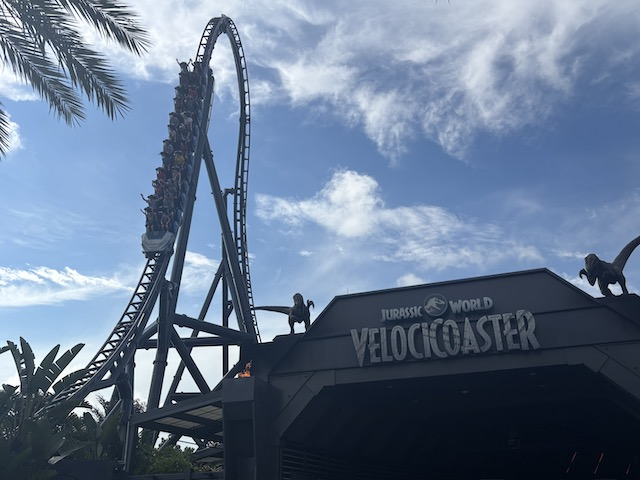
We're here at Islands of Adventures within the Universal Orlando Resort and today's ride we'll be reviewing for you is a personal favorite of mine and the coaster so good it got me to overlook Universal's HORRENDOUS decision in murdering Dueling Dragons and actually is a worthy replacement. Velocicoaster. I know this ride is constantly praised and widely regarded as one of the best coasters of all time. But......god damn it. This ride GENUINELY is THAT GOOD!!! So yeah. Hop in the seats, pull down the lap bar, and we're off! We roll around a turn and into the launch pad. Fog rolls in and you hear the scoentists of Jurassic Park talk to us before we launch. And we're off!! It's a nice launch out. Not the best, but still good. We them head into an Immelmann. This is pretty cool. Not sure if you technically go upsidedown here. It's slightly inclined. But still cool. You then up a hill, flip upsidedown, and dive baxk down. Its called a dive loop, but NO!!! This isn't like any Dive Loop I've done. But hey. There's some nice forces here and we're off to a good start. We then head into a curved hill, which gives us some nice airtime, until BAM!!! Another pop of ejector airtime going through that airtime hill! We then curved down again until we go through another curved hill, going through some rockwork, since....yeah. This ride is VERY well themed. And these curves are providing some nice laterals. We go through a downward S bend before we go through a seies of basnked turn. Yeah. These are fun. They have some good laterals. This is a good ride, but its no Maverick. This is fun, but not Top 10 Amazing. Is Velocicoaster extremely overrated? *hyena laugh* HELL NO!!! CAUSE THIS IS JUST THE FIRST HALF!!! AND ONCE THIS RIDE HITS THE SECOND HALF, IT'S JUST GONNA GET CRAZIER AND CRAZIER AND BETTER AND BETTER!!! And that starts with the 2nd launch. It doesn't stop and prepare you. You're just already in areally good ride when BAM!!! It just hits the accelerator and gives you a pretty strong launch. Especially when you're already going fast. That extra kick of speed really does make it seem out of control. We then rise up into the Top Hat. Up into the sky, and.....BAM!!! Ejector air! Be sure to check out the view of Islands of....too late. We're already in a big vertical drop to the ground. This is awesome! And its only about to get better! We gain a ton of speed before heading into the Zero G Stall. I know a lot of rides have these inversions, but the one here just feels far crazier. This both provides an out of control feeling, combined with some good hangtime. Now thus is NOT an easy combination to pull off, but Velocicoaster is just really that special of a ride. We then head into the turns. This may look like the breather portion of the ride. But.....NO!!! We're in far some LONG sustained lateral Gs tha just puts a huge smile on your face. It just keeps going and going until, BAM!!!! Aggressive change in direction. Which gives us some whiplash as you then get laterals in the other direction! More laterals, with a few curves. And then, dip down causew here it comes. The motherf*cking Mosasaurus Roll. Why is this inversion so widely reverred? Because GOD DAMN IT!!! IT IS SO INSANE THAT IT FEELS LIKE ITS TRYING TO KILL YOU!!! IT IS THE STRONGEST INVERSION OUT OF ANY COASTER I HAVE RIDDEN!!! AND WITH THE COMPETITION, THAT'S SAYING SOMETHING!!! SO MUCH WHIP!!!! COASTERGASM!!!! *drool* A couple curved hills with strong laterals, and glide straight into the brake run. *deep breath* WOW!!! I mean, what else to say but......HOLY CRAP!!! SO F*CKING GOOD!!! I know this ride has a ton of hype, and IT'S TOTALLY DESERVED!!! DO NOT MISS THIS RIDE IF YOU'RE AT ISLANDS OF ADVENTURES!!!
10/10
Location: Universal Orlando Resort (Islands of Adventures)
Opened: 2021
Built by: Intamin
Last Ridden: August 17, 2025
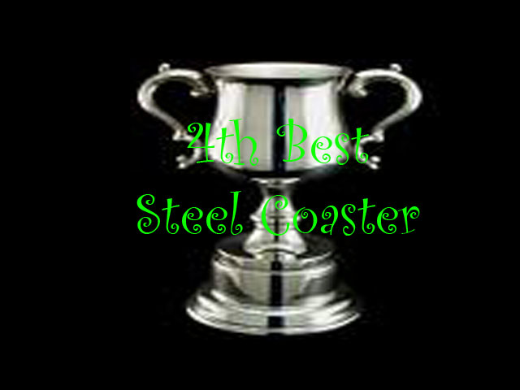
Velocicoaster Photos
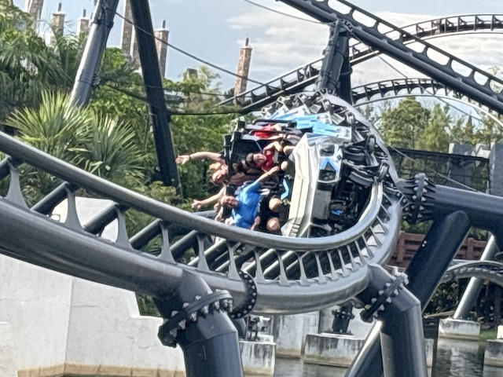
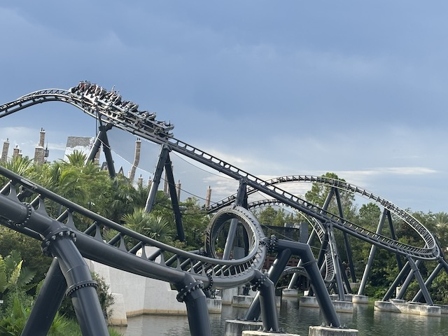
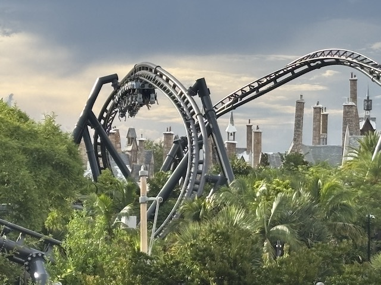
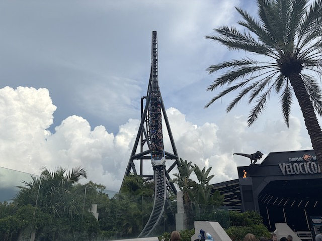
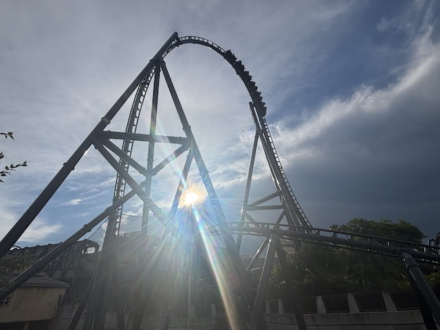
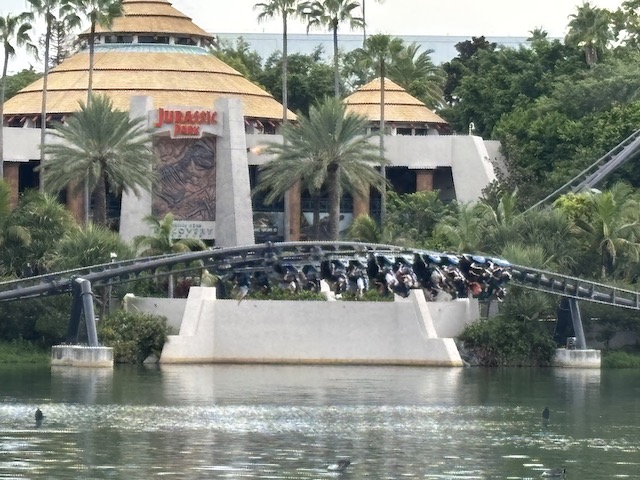
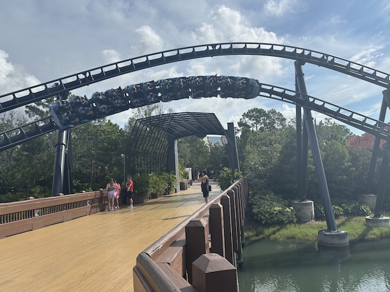
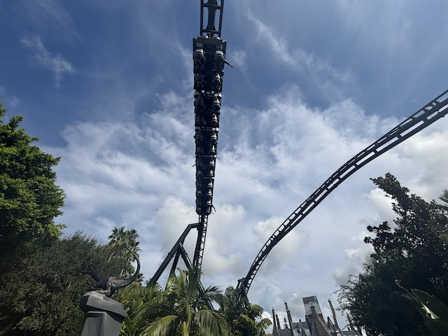
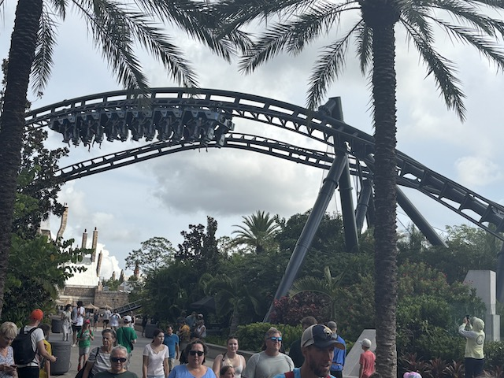
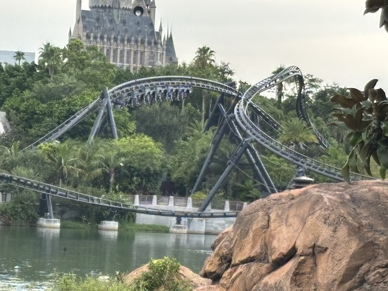
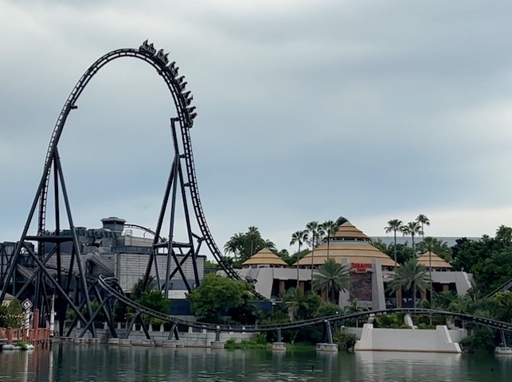
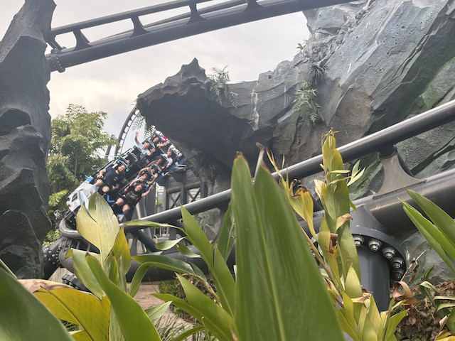
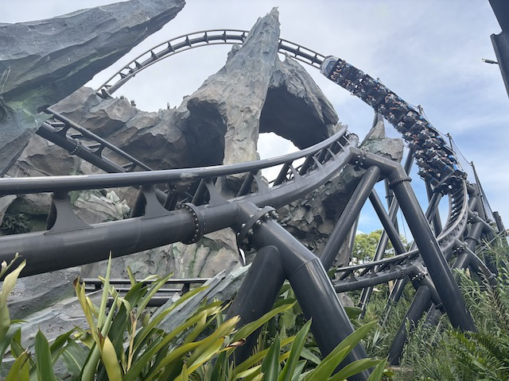
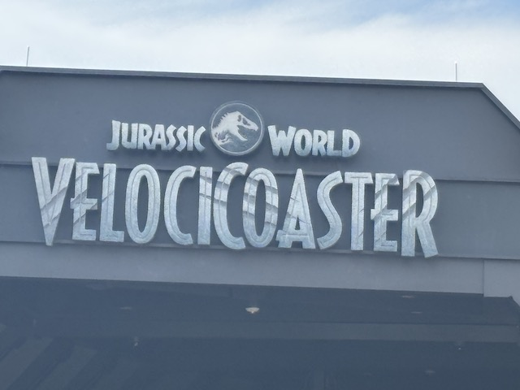
Home
|